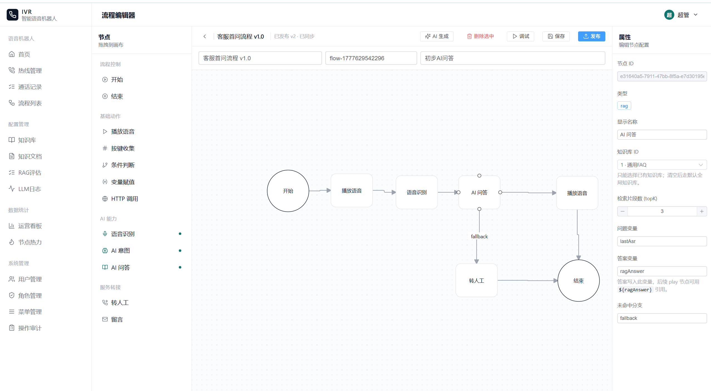

智能 IVR 语音机器人系统
面向客服热线场景开发的智能 IVR 系统，覆盖热线接入、可视化流程编排、流程发布与调试、通话记录追踪、RAG 知识库问答、AI 意图识别、ASR/TTS 语音能力和用户权限管理。
5
后端模块拆分
11+
IVR 节点类型
RAG
知识库问答
ESL
电话事件接入
Project Role
系统架构设计 / 核心模块开发 / 前后端联调
项目结果
~92%
端到端通话流程成功率（待实测）
< 1.8s
AI 首次响应时延（待实测）
~40%
流程配置效率提升（待实测）
多模块后端架构
按 admin / engine / ai / call / common 拆分管理后台、流程引擎、AI 能力、呼叫接入和公共能力，提升业务边界清晰度与可维护性。
IVR 流程执行引擎
通过会话状态机处理 answer / dtmf / asr / hangup 等事件，让通话流程支持暂停、恢复、终止和按节点继续执行。
AI 与电话链路闭环
集成 OpenAI 兼容接口、RAG 检索、意图识别和 FreeSWITCH ESL 事件流，实现从来电接入到 AI 问答和转人工的完整闭环。
Tech Stack
Core Contributions
可视化流程编辑器
基于 LogicFlow 实现节点拖拽、属性配置、连线分支、流程校验、保存发布、版本恢复、AI 生成草稿和可视化调试。
RAG 知识库问答
实现知识库、文档、切片、Embedding 存储与检索，并提供关键词检索兜底机制增强异常场景可用性。
通话事件追踪
处理来电创建、接听、DTMF、挂机、录音结束等事件，将真实电话链路映射到业务流程引擎。
后台管理与部署
完成用户、角色、菜单权限、审计、热线、通话记录、LLM 日志、RAG 评估等模块，并支持 Docker Compose 一键演示。
查看项目细节 Case Study
业务闭环
从热线接入、流程执行、语音识别、AI 判断、知识库问答到转人工，系统围绕客服热线场景形成完整链路。
工程难点
通话过程是事件驱动且会被用户输入打断，因此通过会话状态机管理运行态，保证流程能够暂停、恢复和正确终止。
可靠性设计
AI 检索链路加入关键词兜底，运行态数据放入 Redis，并记录 LLM 调用日志与 RAG 评估数据，便于排查和优化。